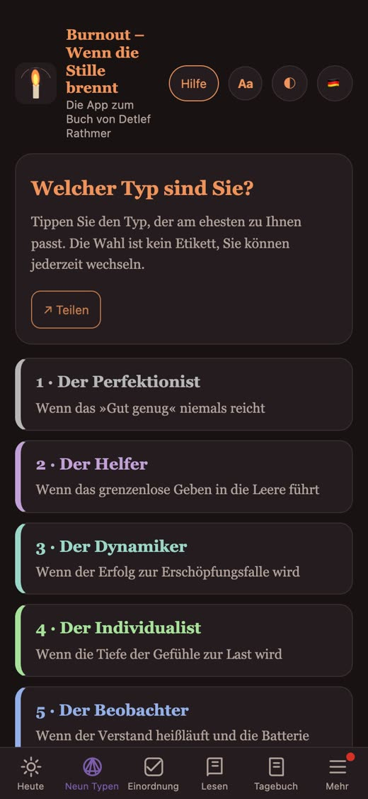
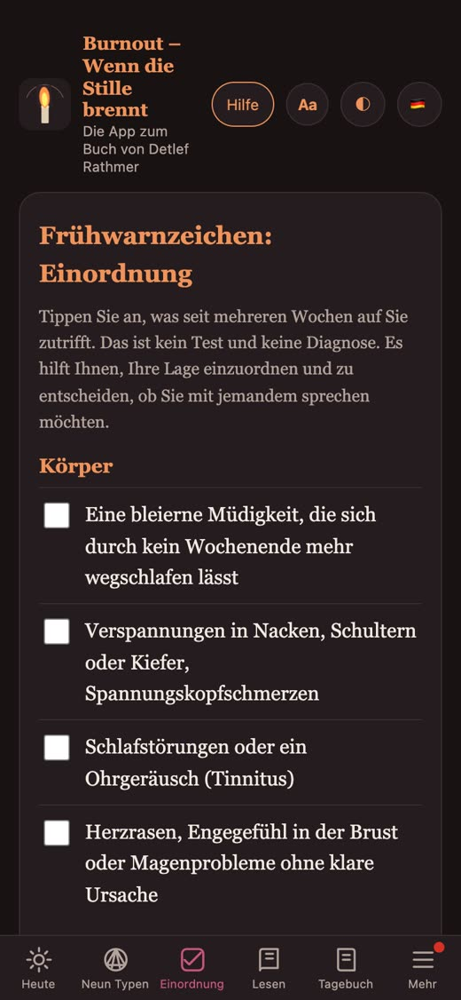
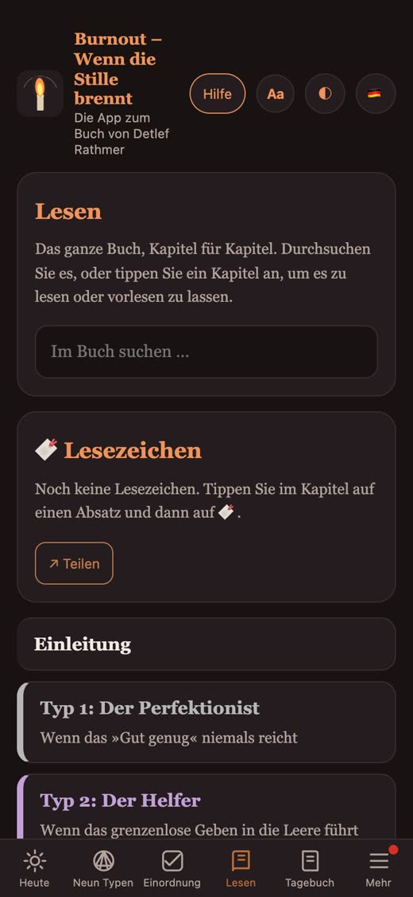
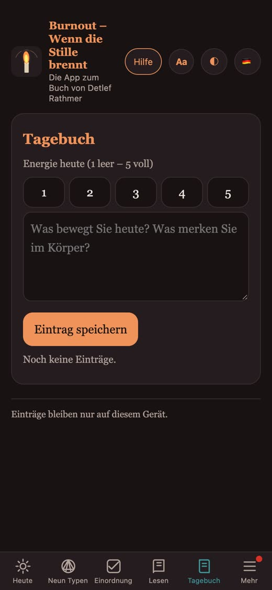

Die App zum Buch

Burnout – Wenn die Stille brennt
Burnout verstehen, Typ für Typ.
Das Buch von Detlef Rathmer als App: Wie brennt Ihr Typ aus, und was nährt ihn wirklich? Muster, Falle und Weg für alle neun Enneagramm-Typen, eine Einordnung der Frühwarnzeichen, das ganze Buch mit Suche und einer Vorlesefunktion mit der Stimme des Autors (digital vertont, mit Zustimmung des Autors) und ein Tagebuch, das auf Ihrem Gerät bleibt. Auf dem Handy, in Deutsch, Englisch und Spanisch.
App kaufen · 9,99 € Leseprobe ansehen Zum BuchEinmalzahlung 9,99 €, kein Abo. Die Leseprobe ist frei, der Rest wird mit dem Kauf freigeschaltet. Die App gibt es auf Deutsch, Englisch und Spanisch: 🇩🇪 Deutsch · 🇬🇧 English · 🇪🇸 Español
Der Film zur App
90 Sekunden: Wie jeder Typ ausbrennt und was die App bietet.
Musik: „Where Silence Used to Breathe“ von Detlef Rathmer.
Ein Blick in die App
So sieht die App auf dem Handy aus.




Was die App bietet
Für jeden Enneagramm-Typ: wie er ausbrennt, die tiefe Wunde, die Leidenschaft, der Antrieb und die Falle im Burnout. Dazu die Stresslinie als Frühwarnsystem, die Wachstumslinie, Reflexionsfragen, eine kleine Alltagsübung und eine Affirmation.
Sie kreuzen an, was seit mehreren Wochen auf Sie zutrifft. Das Ergebnis kommt ohne Punkteurteil: kein Test und keine Diagnose. Bei Krisengedanken erscheint sofort eine Hilfe-Box mit Notruf und Telefonseelsorge.
Jedes Kapitel lässt sich anhören, mit der Stimme von Detlef Rathmer, digital vertont und mit Zustimmung des Autors. Das Vorlesen folgt dem Text Absatz für Absatz, Sie wählen das Tempo und lesen mit. Die Vorlesefunktion ist für die App gemacht, nicht als Hörbuch.
Alle Kapitel mit Suche, Lesezeichen und Vorlesefunktion. Von der Typ-Seite, der Einordnung und dem Buchtext führen Verweise jeweils zueinander. Auch offline nutzbar.
Energie von 1 bis 5 und ein paar Zeilen dazu. Die Einträge bleiben nur auf Ihrem Gerät.
Ein Gedanke aus dem Buch auf der Startseite, dazu das Wetter, wie in den anderen Apps.
„Where Silence Used to Breathe“ von Detlef Rathmer, zu hören unter „Mehr“ und über „Heute“.
Buch und App
Zwei Fassungen, jede für einen anderen Zweck.
Zum Lesen gedacht, als Taschenbuch bei BoD.
Enthält den vollständigen Text des Buches. Er wird auch vorgelesen, digital vertont mit der Stimme des Autors und mit seiner Zustimmung. Dazu kommen Funktionen, die nur eine App bietet: Einordnung, Tagebuch, Suche und Lesezeichen.
Das Buch zur App
Der Autor
 Detlef Rathmer
Detlef RathmerSachbuchautor, Enneagramm-Experte, Dozent und Coach. Seit dem Jahr 2000 als Heilpraktiker tätig, mit dem Schwerpunkt klassische Homöopathie.
Hinweis: Die App gibt Anregungen zur Selbstbeobachtung und Orientierung. Sie ist keine Diagnose, keine Therapie und ersetzt keine ärztliche oder psychotherapeutische Hilfe. Bei anhaltender Erschöpfung gehören Sie in ärztliche Hände. In einer akuten Krise: Notruf 112, Telefonseelsorge 0800 111 0 111 oder 0800 111 0 222 (kostenfrei) oder 116 123.